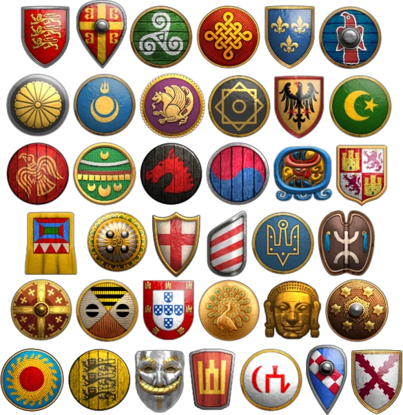
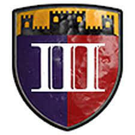

Civilizaciones
En el AoE (Age Of Empires) lo llamare asi por temas de de practicidad, hay 42 civilizaciones jugables, cada una cuenta con 2 unidades unicas, 2 tecnologias unicas y bonificaciones especiales. La mayoría de las civilizaciones tienen dos o tres especialidades militares, lo que significa que los tipos de unidades que son de esa categoria, generalmente reciben la mayoría de las actualizaciones disponibles además de las bonificaciones.

- aztecas
- bengalies
- Bereberes
- birmanos
- bizantinos
- Bohemios
- borgoñones
- britanicos
- bulgaros
- celtas
- chinos
- coreanos
- cumanos
- dravidicos
- eslavos
- españoles
- etiopes
- francos
- godos
- gurjaras
- hunos
- incas
- indostanies
- italianos
- japoneses
- jemeres
- lituanos
- magiares
- malayos
- malies
- mayas
- mongoles
- persas
- polacos
- portugueses
- sarracenos
- sicilianos
- tartaros
- teutones
- turcos
- vikingos
¿Que son las Edades?
Las edades en AoE 2 son etapas del juego por las cuales se avanza fabricando por lo menos dos edificios por edad,y pagando los recursos correspondientes. Estas son:
Alta edad media.

Alta Edad Media La Alta Edad Media es la edad estándar de comienzo de una partida. Esta edad es muy económica, pues la idea principal es recoger recursos para avanzar a la siguiente edad. Militarmente es muy pobre, pues solo está a disposición una única Caballería de Exploración (Explorador Águila si se trata de una civilización del Nuevo Mundo) y Milicias que se pueden formar en los Cuarteles.
Edad feudal.

La Edad Feudal es una edad donde aparecen ya varias mejoras, tanto económicas como militares. El entrenamiento de nuevas unidades militares se expande, ya que está disponible la Galería de tiro con arco y el Establo.
Edad de los castillos
La Edad de los Castillos es una edad donde las fortificaciones pasan a tener una ventaja, gracias a la disponibilidad del Castillo, donde también podremos crear la unidad única de la civilización elegida. También disponemos de nuevas tecnologías que llevan casi al máximo nuestra economía, pues se pueden crear nuevos centros urbanos.
Edad imperial

La Edad Imperial es la edad donde podemos llevar a la civilización con la que jueguemos a su máximo potencial, sobre todo en lo militar.
informacion basica parte 2.